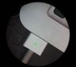
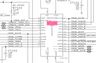

 Comment diagnostiquer un MacBook Pro qui ne charge plus? Un guide simple et direct pour diagnostiquer votre Mac qui refuse de charger: Test, conseils et outils y sont listés. 24 janvier 2020
 Batterie non-reconnue et ISL6259 Un article un peu technique sur la gestion de batterie sur les Mac: puce ISL, capteurs de courant et problèmes de charge y sont détaillés. 19 janvier 2020
Mac qui à pris du liquide: réflexes, guide et conseils Accident classique: un verre renversé sur un Mac. Le meilleurs réflexe est d'éteindre la machine et débrancher la batterie. On vous expliquer... 22 décembre 2019
Rétro-éclairage des MacBook Pro: Le guide technique Le premier guide détaillé et en français pour diagnostiquer les problèmes de rétroéclairage des MacBook Pro et MacBook Air. A vos multimètres ! 1 décembre 2019
Réparer une carte mère HS de Macbook Pro, c’est possible ? Il n'est pas nécessaire de remplacer une carte mère de MacBook Pro ou MacBook Air. Dans 95% des cas, elle est réparable, et nous vous expliquons... 12 novembre 2019